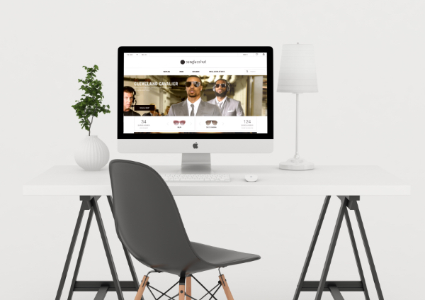

Sunglasshut
DIGITAL STRATEGY . UX . UI
Provide curated content, contextualizing the different products the website sells, instead of simply listing them over a white limbo . . .
view projXProvide curated content, contextualizing the different products the website sells, instead of simply listing them over a white limbo . . .
view projXThe project goal is to review the Kiosk user interface in order to make it more usable, metrics to take into account are: errors generated, time taken to complete the task, learnability.
view projXAnalyze the flow and application structure, with an eye on the proper use of the key functions. Keep in mind that your product must answer all of the Responsive needs.
view projXThe Trumpet is an online magazine which recalls the fashion paper world but also makes your user able to buy everything he/she sees online in few seconds.
view projX
I was asked to select an Italian brand that operates in the luxury, fashion or arts sectors, analyses the brand’s digital presence . . .
view projXSince i was young, i’ve always been a huge fan of mangas, drawings … I selftaught how to draw and kept on practising. These are some of my individual / client work.
view projX